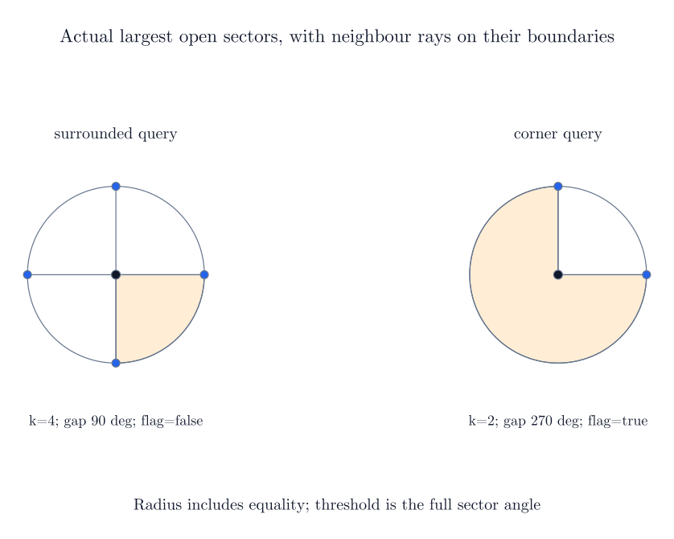
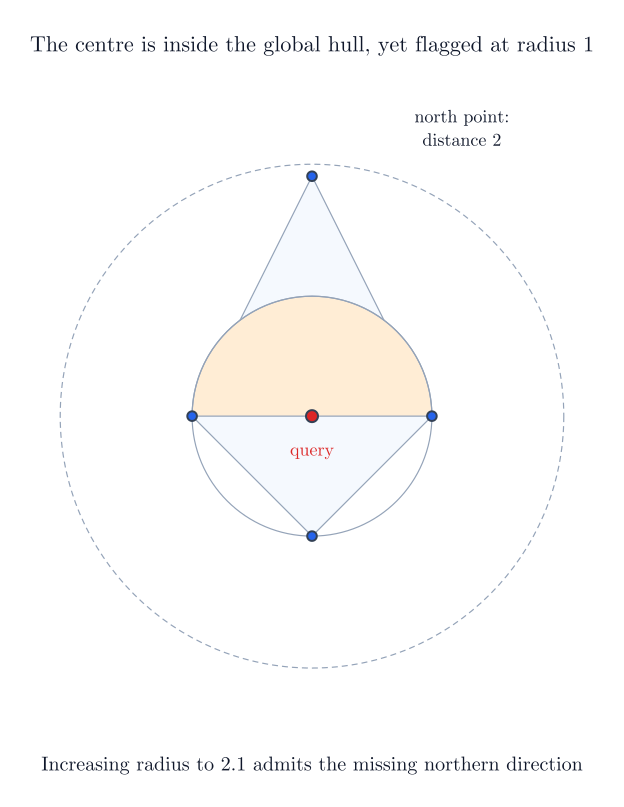
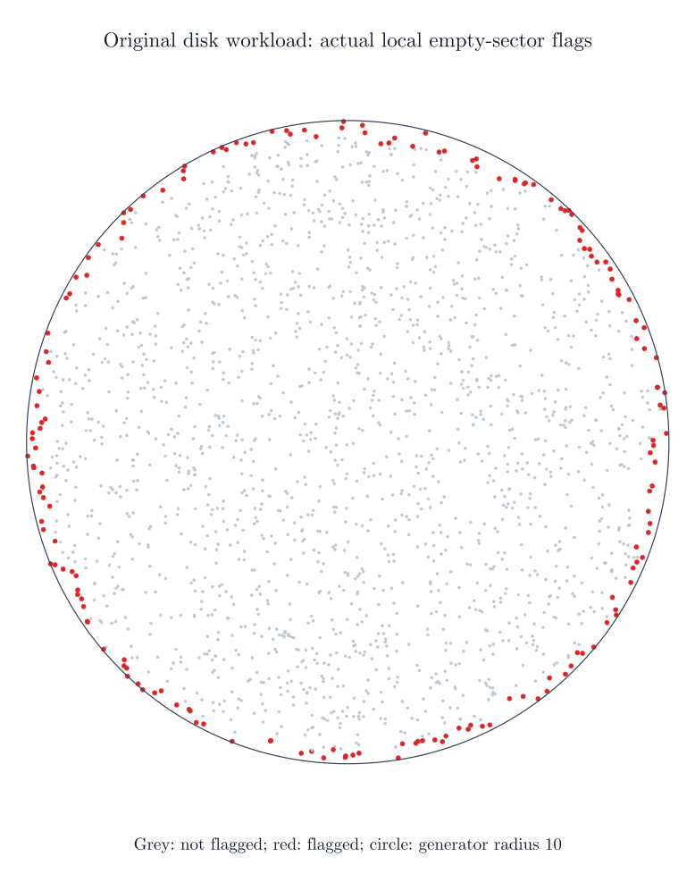
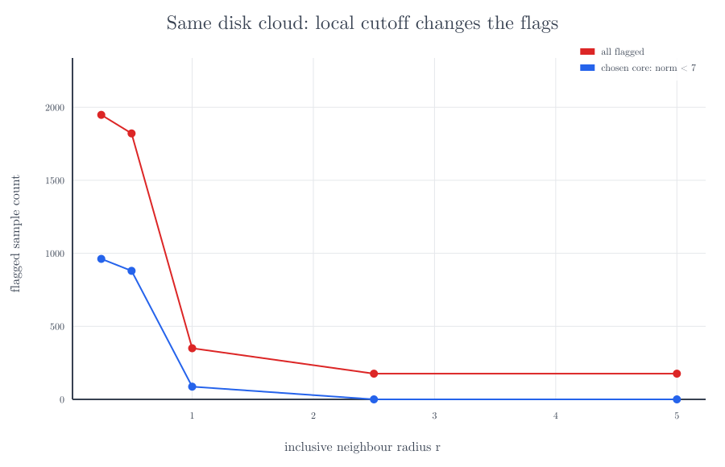

The Cone Algorithm in 2D: Empty Sectors and Sampling
Abstract
A planar point cloud can suggest an outline when some sample points have a wide empty sector among their nearby neighbour directions. The same observation can also arise from sparse or uneven sampling inside an object. This report examines the library's two-dimensional largest-gap classifier, a planar analogue of the published three-dimensional empty-cone idea. Native records expose actual neighbours, angular witnesses and all-pairs work. We retain the original seeded disk experiment, add hand-checkable sectors and a flagged interior counterexample, and measure radius/threshold sensitivity. The result is a local sampling diagnostic, with explicit numerical, sparse-neighbour and computational limits.
A circular gap is an empty open sector
For query point p, collect nonzero displacement vectors to other records within the inclusive radius r. Coincident locations have no direction and are excluded. Repeated nonzero directions remain separate records. Sort the computed atan2 angles in [−π,π]. For k≥2 directions, the largest circular gap is
Each gap describes an open angular sector with no admitted neighbour ray in its interior; neighbours on its bounding rays are allowed. The classifier flags p when G(p)≥β, where β is a full planar opening angle in radians. With fewer than two noncoincident directions, it uses a full-turn score by convention and flags the query for every valid β in (0,2π]. An isolated flag therefore has a different sampling interpretation from a densely supported outline point.
The first example compares four cardinal neighbours with a two-neighbour corner. Both use r=1 and β=0.55π, just above a right angle. The shaded sectors come directly from native gap_start/largest_gap witnesses, including the wrap gap.
#include <dm/dm.hpp>
int main() {
std::filesystem::create_directories("build");
const long double pi=std::acos(-1.L);
const std::vector<std::vector<dm::geometry::Point2D>> clouds{{{0,0},{1,0},{0,1},{-1,0},{0,-1}},{{0,0},{1,0},{0,1}}};
const std::array<std::string_view,2> names{"surrounded query","corner query"};
dm::graphics::Diagram d(110,1100);
dm::graphics::DiagramStroke edge;edge.color={100,116,139};edge.width=1.2;
std::print("| query fixture | admitted directions | largest gap, degrees | flagged at 0.55 pi |\n| :--- | ---: | ---: | :--- |\n");
for(std::size_t panel=0;panel<clouds.size();++panel) {
const auto t=dm::geometry::cone_surface_trace(clouds[panel],1,.55L*pi);
const auto& q=t.analysis.points[0];const double cx=5.*panel;
std::vector<dm::graphics::DiagramPoint> sector{{cx,0}};
for(int k=0;k<=48;++k) {
const auto angle=q.gap_start+q.largest_gap*k/48;
sector.push_back({cx+double(std::cos(angle)),double(std::sin(angle))});
}
d.polygon(sector,{255,237,213},edge).ellipse({cx,0},1,1,{255,255,255,0},edge);
for(const auto& n:t.directions[0]) {
d.path({{cx,0},{cx+n.point.x,n.point.y}},edge)
.ellipse({cx+n.point.x,n.point.y},.045,.045,{37,99,235},edge);
}
d.ellipse({cx,0},.05,.05,{15,23,42},edge)
.text({cx,1.6},std::string(names[panel]),20)
.text({cx,-1.65},std::format("k={}; gap {:.0f} deg; flag={}",q.neighbors,180*q.largest_gap/pi,q.surface),18);
std::print("| {} | {} | {:.6f} | {} |\n",names[panel],q.neighbors,180*q.largest_gap/pi,q.surface);
}
d.text({2.5,2.7},"Actual largest open sectors, with neighbour rays on their boundaries",23)
.text({2.5,-2.6},"Radius includes equality; threshold is the full sector angle",20)
.save_svg("build/cone_sectors.svg");
}| query fixture | admitted directions | largest gap, degrees | flagged at 0.55 pi |
|---|---|---|---|
| surrounded query | 4 | 90.000000 | false |
| corner query | 2 | 270.000000 | true |

Why does sorting suffice? Any open sector without a neighbour ray can be expanded until its boundaries meet consecutive rays, including the cyclic first/last pair. Thus one of these k gaps is at least as wide. Checking every gap finds the maximum for the admitted direction set. Equal maxima keep the first strict largest adjacent gap, with wrap tested last; equal computed angles sort by source index. These rules make the recorded witness deterministic for a fixed input.
The published cone algorithm identifies surface particles in three dimensions using empty spatial cones. This API instead sorts planar angles. It performs neither that three-dimensional search nor a mesh/normal reconstruction. The two parameters also carry this report's explicit meanings: a planar radius and a full angular-sector width.
A flagged point can be strictly inside the global convex hull
Place points at (1,0),(−1,0),(0,−1),(0,2), together with query (0,0). The query is strictly inside their diamond-shaped convex hull. At r=1, the northern point is too far away, so the admitted directions leave an empty upper half-plane: G=π and the centre is flagged. At r=2.1 the northern direction enters and the maximum gap drops to π/2, clearing the flag. The point and global shape did not move; only the neighbourhood changed.
#include <dm/dm.hpp>
int main() {
std::filesystem::create_directories("build");
const std::vector<dm::geometry::Point2D> p{{0,0},{1,0},{-1,0},{0,-1},{0,2}};
const long double pi=std::acos(-1.L);
const auto small=dm::geometry::cone_surface_analyze(p,1,.55L*pi),large=dm::geometry::cone_surface_analyze(p,2.1,.55L*pi);
if(!small.points[0].surface || large.points[0].surface)return 1;
std::print("| radius | centre directions | maximum gap, degrees | centre flagged | complete pair visits |\n| ---: | ---: | ---: | :--- | ---: |\n");
std::print("| 1 | {} | {:.6f} | {} | {} |\n",small.points[0].neighbors,180*small.points[0].largest_gap/pi,small.points[0].surface,small.work.pair_visits);
std::print("| 2.1 | {} | {:.6f} | {} | {} |\n",large.points[0].neighbors,180*large.points[0].largest_gap/pi,large.points[0].surface,large.work.pair_visits);
dm::graphics::Diagram d(120,950);
dm::graphics::DiagramStroke edge;edge.color={148,163,184};edge.width=1.2;
d.polygon({{-1,0},{0,-1},{1,0},{0,2}},{219,234,254,.25},edge);
std::vector<dm::graphics::DiagramPoint> sector{{0,0}};
const auto& q=small.points[0];
for(int k=0;k<=48;++k) {
const auto angle=q.gap_start+q.largest_gap*k/48;
sector.push_back({double(std::cos(angle)),double(std::sin(angle))});
}
d.polygon(sector,{255,237,213},edge).ellipse({0,0},1,1,{255,255,255,0},edge);
edge.dashed=true;d.ellipse({0,0},2.1,2.1,{255,255,255,0},edge);
for(std::size_t i=1;i<p.size();++i)d.ellipse({p[i].x,p[i].y},.04,.04,{37,99,235});
d.ellipse({0,0},.05,.05,{220,38,38})
.text({0,3.1},"The centre is inside the global hull, yet flagged at radius 1",22)
.text({1.25,2.4},"north point:\ndistance 2",18)
.text({0,-.28},"query",18,{220,38,38})
.text({0,-2.9},"Increasing radius to 2.1 admits the missing northern direction",20)
.save_svg("build/cone_interior_counterexample.svg");
}| radius | centre directions | maximum gap, degrees | centre flagged | complete pair visits |
|---|---|---|---|---|
| 1 | 3 | 180.000000 | true | 20 |
| 2.1 | 4 | 90.000000 | false | 20 |

There is a useful ideal global control. If every other point is admitted and β=π, a gap at least π means the directions fit in a closed semicircle. Equivalently, a line through the query supports the entire cloud on one side: the query lies on its convex-hull boundary. The reverse implication follows from that supporting line. This includes collinear and coincident clouds in the ambient plane. The local cutoff deliberately changes this criterion. Finite computed angles near a threshold are not exact geometric predicates.
The original seeded disk, measured without claiming ground truth
Retain 2500 square candidates, radius R=10, one local mt19937 engine seeded with one, and consecutive x/y uniform-real draws in [−R,R]. The native sampler accepts candidates inside the disk in encounter order. On this toolchain the entire accepted stream matches the original program; standard-library distribution mappings are not promised bitwise identical elsewhere. Classification retains r=2.5 and the original double-valued threshold 0.55π.
The analytic circle describes the input generator. The flags remain sample decisions, not points proven to lie exactly on that circle. A native radial summary measures a chosen inner disk, norm<7, and an outer band, norm>9.4. Those cutoffs are diagnostics, rather than a universal definition of the surface. The native equal-scale diagram keeps the known disk circular.
#include <dm/dm.hpp>
int main() {
std::filesystem::create_directories("build");
const auto p=dm::geometry::sample_disk_candidates(2500,10,1);
const double threshold=.55*std::acos(-1.);
const auto a=dm::geometry::cone_surface_analyze(p,2.5,threshold);
const auto s=dm::geometry::radial_flag_summary(p,a.surface,7,9.4);
if(!s.has_flagged || s.inner_flagged!=0 || a.work.pair_visits!=p.size()*(p.size()-1))return 1;
std::print("| actual disk diagnostic | value |\n| :--- | ---: |\n| accepted points | {} |\n| flagged points | {} |\n| inner points, norm below 7 | {} |\n| inner flagged | {} |\n| outer points, norm above 9.4 | {} |\n| outer flagged | {} |\n| closest flagged radius | {:.6f} |\n| farthest flagged radius | {:.6f} |\n| ordered pair visits | {} |\n| admitted angle evaluations | {} |\n",s.point_count,s.flagged_points,s.inner_points,s.inner_flagged,s.outer_points,s.outer_flagged,s.min_flagged_radius,s.max_flagged_radius,a.work.pair_visits,a.work.angle_evaluations);
dm::graphics::Diagram d(36,1000);
dm::graphics::DiagramStroke point;point.width=.6;
for(std::size_t i=0;i<p.size();++i) {
const auto colour=a.surface[i]?dm::graphics::RGB{220,38,38}:dm::graphics::RGB{190,198,210};
point.color=colour;const double size=a.surface[i]?.07:.04;
d.ellipse({p[i].x,p[i].y},size,size,colour,point);
}
dm::graphics::DiagramStroke circle;circle.color={51,65,85};circle.width=1.2;
d.ellipse({0,0},10,10,{255,255,255,0},circle)
.text({0,12.5},"Original disk workload: actual local empty-sector flags",23)
.text({0,-12.5},"Grey: not flagged; red: flagged; circle: generator radius 10",19)
.save_svg("build/cone_algorithm.svg");
}| actual disk diagnostic | value |
|---|---|
| accepted points | 1948 |
| flagged points | 176 |
| inner points, norm below 7 | 962 |
| inner flagged | 0 |
| outer points, norm above 9.4 | 246 |
| outer flagged | 174 |
| closest flagged radius | 9.336971 |
| farthest flagged radius | 9.999772 |
| ordered pair visits | 3792756 |
| admitted angle evaluations | 212584 |

Radius and threshold are part of the result
For fixed points and threshold, increasing r adds directions. Splitting circular gaps cannot enlarge the largest empty gap, so flags can disappear as the radius grows. For fixed r, raising β also cannot add a flag. These monotonic statements describe the rule; choosing parameters that match an unknown physical boundary still needs information about sampling density, holes and the shape's scale.
The next program regenerates the same cloud, measures radius sensitivity at 0.55π, then changes the angular threshold at r=2.5. It reports the chosen core separately. An absent flagged minimum is printed as none, using an explicit has_flagged state rather than a large numerical sentinel.
#include <dm/dm.hpp>
int main() {
std::filesystem::create_directories("build");
const auto p=dm::geometry::sample_disk_candidates(2500,10,1);
const double original_threshold=.55*std::acos(-1.);
std::vector<double> radii,flagged,inner_flagged;
std::print("| radius at 0.55 pi | total flagged | chosen core flagged | pair visits | angle evaluations |\n| ---: | ---: | ---: | ---: | ---: |\n");
for(double radius:{.25,.5,1.,2.5,5.}) {
const auto a=dm::geometry::cone_surface_analyze(p,radius,original_threshold);
const auto s=dm::geometry::radial_flag_summary(p,a.surface,7,9.4);
radii.push_back(radius);flagged.push_back(s.flagged_points);inner_flagged.push_back(s.inner_flagged);
std::print("| {} | {} | {} | {} | {} |\n",radius,s.flagged_points,s.inner_flagged,a.work.pair_visits,a.work.angle_evaluations);
}
std::print("\n| threshold / pi at radius 2.5 | total flagged | chosen core flagged | minimum flagged radius |\n| ---: | ---: | ---: | :--- |\n");
for(long double ratio:{.05L,.25L,.55L,1.L,2.L}) {
const auto a=dm::geometry::cone_surface_analyze(p,2.5,ratio*std::acos(-1.L));
const auto s=dm::geometry::radial_flag_summary(p,a.surface,7,9.4);
std::print("| {:.2f} | {} | {} | {} |\n",ratio,s.flagged_points,s.inner_flagged,s.has_flagged?std::format("{:.6f}",s.min_flagged_radius):"none");
}
auto plot=dm::graphics::RPlot::create();
plot.line(radii,flagged,"all flagged",{220,38,38},2).points(radii,flagged,"",{220,38,38},5)
.line(radii,inner_flagged,"core flagged",{37,99,235},2).points(radii,inner_flagged,"",{37,99,235},5)
.legend({"all flagged","chosen core: norm < 7"},{{220,38,38},{37,99,235}})
.title("Same disk cloud: local cutoff changes the flags")
.x_label("inclusive neighbour radius r").y_label("flagged sample count")
.y_limits(0,p.size()*1.2).size(900,580).save_svg("build/cone_sensitivity.svg");
}| radius at 0.55 pi | total flagged | chosen core flagged | pair visits | angle evaluations |
|---|---|---|---|---|
| 0.25 | 1948 | 962 | 3792756 | 2328 |
| 0.5 | 1821 | 880 | 3792756 | 9300 |
| 1 | 350 | 87 | 3792756 | 36304 |
| 2.5 | 176 | 0 | 3792756 | 212584 |
| 5 | 176 | 0 | 3792756 | 748682 |
| threshold / pi at radius 2.5 | total flagged | chosen core flagged | minimum flagged radius |
|---|---|---|---|
| 0.05 | 1948 | 962 | 0.083264 |
| 0.25 | 329 | 0 | 8.340590 |
| 0.55 | 176 | 0 | 9.336971 |
| 1.00 | 41 | 0 | 9.745729 |
| 2.00 | 0 | 0 | none |

Work, duplicates and numerical contracts
The geometric rule is local, but the implementation scans every ordered i≠j pair: exactly n(n−1) visits at every cutoff. It computes widened hypot distances for noncoincident records and atan2 angles only for admitted neighbours. Sorting k_i angles and checking their circular gaps gives
Analysis needs O(n) scratch/output storage. The optional trace additionally owns all admitted directions, O(sum k_i), bounded by O(n²). The default complete pair cap is ten million and is checked after full input validation, before allocation or execution. The trace-only direction cap defaults to one million and applies online to actual admitted directions. Zero means unlimited; analysis ignores the direction cap, and the legacy mask-only call has no work cap. No failed check returns a partial result. Counts exclude allocator costs, sort comparator counts and elapsed time; sort_calls counts invocations, rather than sort comparisons.
Coincident records are not artificial zero-angle neighbours. The previous use of atan2(0,0) could invent an eastward ray and fill a real gap. The checked core excludes these records, reports them separately and keeps original identities for all genuine directions. Every point and control is validated, including on empty input: radius must be finite/positive and the full angular threshold must be in (0,2π]. Widened differences/hypot avoid the former double squared-distance overflow/underflow. On platforms without a wider working exponent range, extreme differences can throw overflow_error. Angles and cutoff decisions remain rounded; the implementation does not provide exact geometric predicates or hidden tolerances.
#include <dm/dm.hpp>
int main() {
const std::vector<dm::geometry::Point2D> triangle{{0,0},{1,0},{0,1}};
dm::geometry::ConeSurfaceLimits limits;limits.max_pair_visits=6;limits.max_directions=6;
const auto complete=dm::geometry::cone_surface_trace(triangle,2,3,limits);
bool pair_limit=false,direction_limit=false,invalid=false;
limits.max_pair_visits=5;
try{(void)dm::geometry::cone_surface_analyze(triangle,2,3,limits);}catch(const std::length_error&){pair_limit=true;}
limits.max_pair_visits=6;limits.max_directions=5;
try{(void)dm::geometry::cone_surface_trace(triangle,2,3,limits);}catch(const std::length_error&){direction_limit=true;}
try{(void)dm::geometry::cone_surface_analyze({},0,3);}catch(const std::invalid_argument&){invalid=true;}
const auto gap=complete.analysis.points[0].largest_gap;
const bool equal=dm::geometry::cone_surface_analyze(triangle,2,gap).points[0].surface;
const bool above=dm::geometry::cone_surface_analyze(triangle,2,std::nextafter(gap,10.L)).points[0].surface;
if(!pair_limit || !direction_limit || !invalid || !equal || above)return 1;
const auto duplicate=dm::geometry::cone_surface_analyze({{0,0},{0,0},{0,1},{-1,0},{0,-1}},1,.75L*std::acos(-1.L));
std::print("| actual contract check | result |\n| :--- | :--- |\n| triangle complete pair visits | {} |\n| triangle actual directions | {} |\n| threshold equals returned gap | {} |\n| one working ULP above gap | {} |\n| duplicate query directions | {} |\n| duplicate query coincident records | {} |\n| duplicate query flagged | {} |\n",complete.analysis.work.pair_visits,complete.analysis.work.angle_evaluations,equal,above,duplicate.points[0].neighbors,duplicate.points[0].coincident,duplicate.points[0].surface);
std::print("\nPair cap five and actual-direction cap five reject their six-count workloads. Radius zero rejects even an empty input.\n");
const double tiny=std::numeric_limits<double>::denorm_min();
const auto small=dm::geometry::cone_surface_trace({{0,0},{tiny,0},{2*tiny,0},{0,tiny}},tiny,3);
if(small.analysis.points[0].neighbors!=2)return 1;
std::print("Subnormal cutoff admits {} genuine directions at the origin.\n",small.analysis.points[0].neighbors);
}| actual contract check | result |
|---|---|
| triangle complete pair visits | 6 |
| triangle actual directions | 6 |
| threshold equals returned gap | true |
| one working ULP above gap | false |
| duplicate query directions | 3 |
| duplicate query coincident records | 1 |
| duplicate query flagged | true |
Pair cap five and actual-direction cap five reject their six-count workloads. Radius zero rejects even an empty input. Subnormal cutoff admits 2 genuine directions at the origin.
Conclusion
Actual angular records explain the classifier's empty-sector test and preserve the original dense-disk experiment. That sample's near-rim flags are useful evidence, while the interior counterexample and parameter sweeps show why the same local rule cannot certify an unknown physical surface. The implementation is explicitly planar, its all-pairs cost is measured honestly, and checked distances, coincident-point handling and bounded records make its behavior reproducible and inspectable.
References
- Y. Wang, S. Teitel and C. Dellago (2005), [Melting of icosahedral gold nanoclusters from molecular dynamics simulations](https://doi.org/10.1063/1.1917756), Journal of Chemical Physics 122, 214722. Published three-dimensional empty-cone idea; the library's planar angular-gap variant is distinguished above.
- Y. Wang, [Cone Algorithm: Generic surface particle identification algorithm](https://www.pas.rochester.edu/~wangyt/algorithms/cone/index.html). Author's explanation of the three-dimensional neighbourhood/cone criterion and its two adjustable geometric parameters.